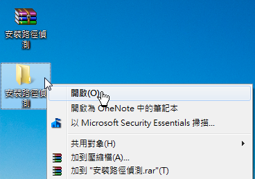
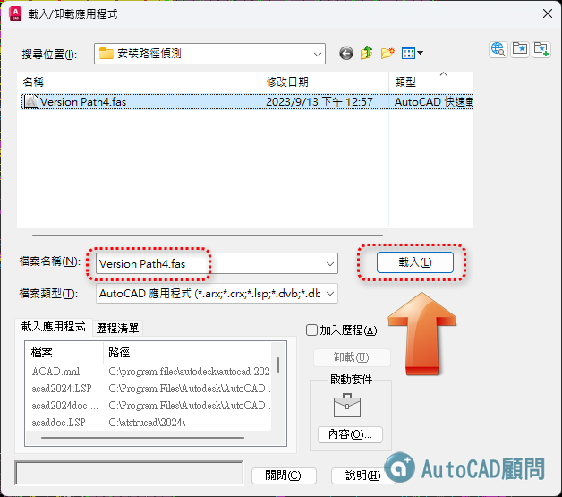
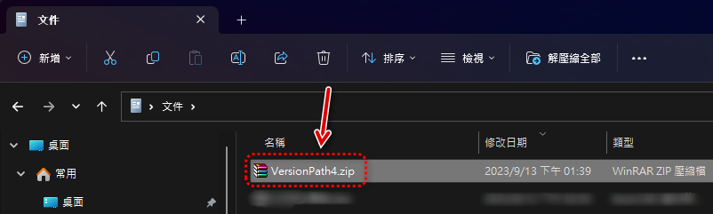

👇影片展示：0:30 安裝路徑偵測步驟
https://www.youtube.com/watch?v=arvN3M-1Z4k&t=30s
AutoCAD顧問論壇外掛程式 安裝說明及升級更新
0:00 片頭展示
0:30 安裝路徑偵測步驟
1:05 主程式下載安裝步驟
2:09 新增外掛工作區
3:48 外掛轉移授權步驟
5:30 外掛升級更新下載
6:46 PDF出圖新功能展示
※說明：
1. AutoCAD顧問 - ACADAdviser外掛程式，只能「安裝授權」在一部電腦之中，僅可安裝同一部電腦中的一套「AutoCAD版本」。
2. 目前可支援 AutoCAD 2016 以上版本（Windows作業系統），使用者可以選擇常用的AutoCAD版本進行「安裝路徑偵測步驟」。
3.用戶執行「安裝路徑偵測步驟」後，接著可以透過 ACADAdviser外掛程式 - 主程式安裝步驟 ，「安裝主程式」到用戶的電腦。
步驟一：將「安裝路徑偵測.zip」解壓縮至電腦桌面。

步驟二：開啟「安裝路徑偵測」資料夾。

步驟三：開啟 AutoCAD → 輸入 APPLOAD指令 → 「載入/卸載應用程式」→ 選擇「Version Path4」檔案 → 載入 。

步驟四：出現「安全性」提示 → 點選「永遠載入」即可。

PS: 載入後關閉「載入/卸載應用程式」畫面。
步驟五：畫面顯示「儲存記錄檔」視窗 → 指定儲存位置 →「存檔」。

步驟六：接著畫面顯示「AutoCAD顧問外掛程式 - 安裝路徑偵測成功」訊息。

步驟七：將「VersionPath4.ZIP」記錄檔，使用電子郵件回傳至論壇管理員（郵件主旨請加入論壇會員帳號）。

論壇信箱： kv1012tiger.kc@gmail.com
補充：如果寄信被擋，可以改用免費空間上傳，再把下載網址給我們即可。
免費空間說明： https://www.autocad-tw.com/t18219-topic
步驟八：外掛程式會預先在「AutoCAD 版本」中，自動加入「支援檔搜尋路徑」。

註：此 ACADAdviser外掛程式「支援檔搜尋路徑」請勿移除或更動。